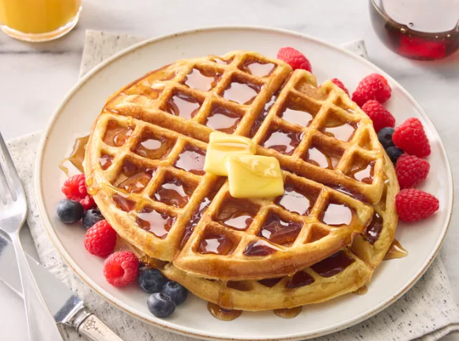

Home
Tender and Easy Buttermilk Waffles

Description
There's something comforting about a stack of freshly made buttermilk waffles. These Tender and Easy Buttermilk Waffles
are light, fluffy, and golden crisp around the edges—perfect for soaking up syrup or layering with fruit and whipped
cream. The buttermilk gives them a subtle tang and extra softness inside, making each bite warm, satisfying, and just
the right amount of indulgent.
Whether you're making breakfast for one or serving a table full of hungry mouths, this recipe delivers consistently
delicious results with minimal fuss. With simple ingredients and an easy prep process, you'll be enjoying a homemade
breakfast that feels like a treat but comes together in no time. Perfect for slow weekends, quick breakfasts, or even brunch with friends.
Ingredients
- 2 cups all-purpose flour
- 2 tablespoons white sugar
- 2 teaspoons baking powder
- 1 teaspoon baking soda
- ½ teaspoon salt
- 2 cups low-fat buttermilk
- ⅓ cup melted butter
- 2 large eggs, lightly beaten
- 1 teaspoon vanilla extract
Steps
- Gather all ingredients.
- Whisk buttermilk and melted butter together in a separate bowl; whisk in eggs.
- Whisk buttermilk and melted butter together in a separate bowl; whisk in eggs.
- Stir buttermilk mixture into flour mixture until just combined and batter is slightly lumpy; stir in vanilla extract.
- Preheat a waffle iron according to manufacturer's instructions.
- To cook each waffle, pour enough batter into the preheated waffle iron to reach 1/2 inch from the edge. Cook according
to manufacturer's instructions.